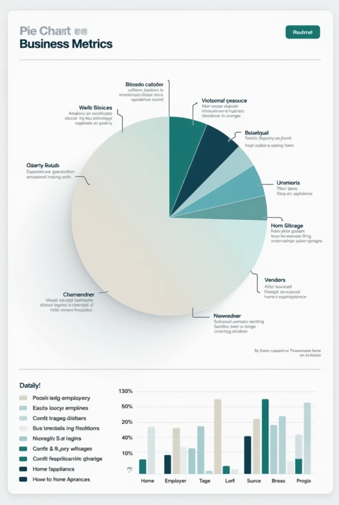
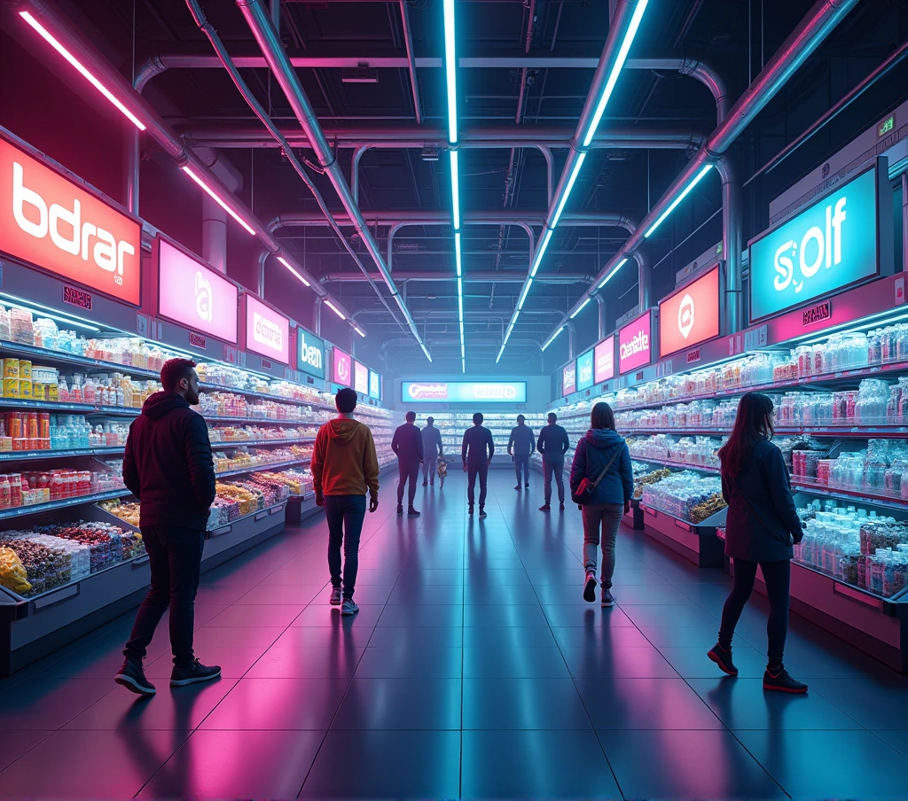
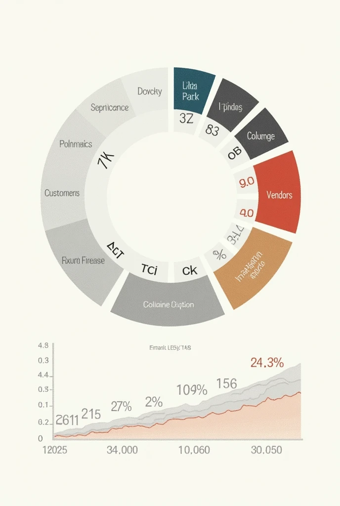
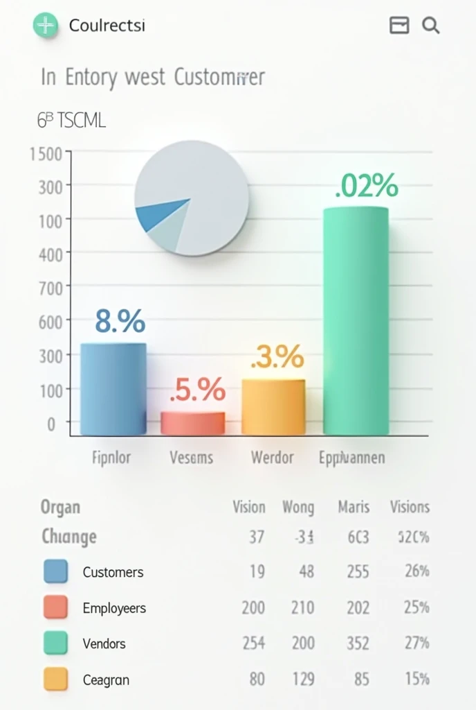
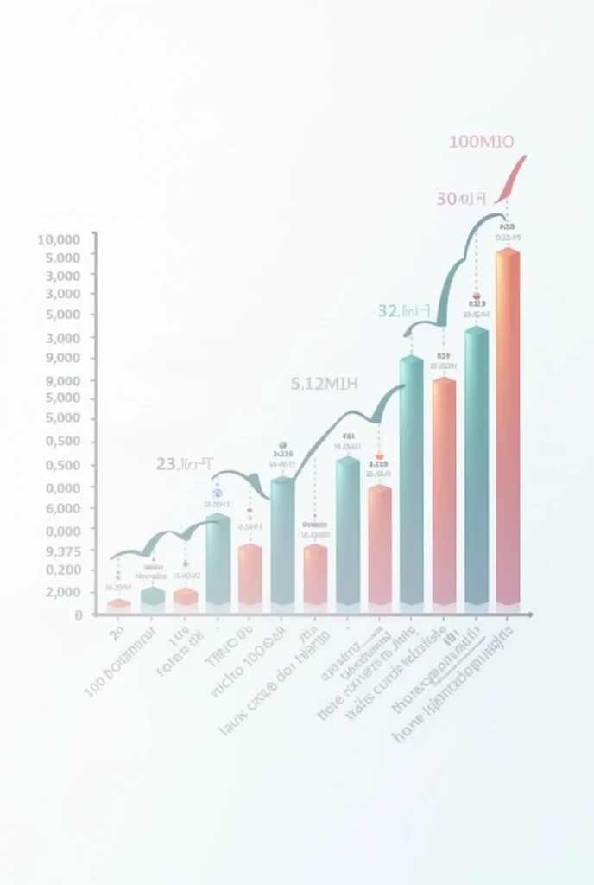

Cyber Mercado
Acesso exclusivo para colaboradores - Gestão e Controle à sua disposição
Funcionalidades Disponíveis
Bem-vindo à área virtual do Cyber Mercado, onde você pode gerenciar o estoque, cadastrar produtos, atualizar preços e analisar os dados em tempo real.
Otimize o controle de operações diárias com nosso sistema de gestão integrada, desenvolvido para garantir eficiência e precisão em todas as tarefas.
Acesse facilmente todas as funcionalidades e mantenha-se conectado às principais atividades do supermercado.




